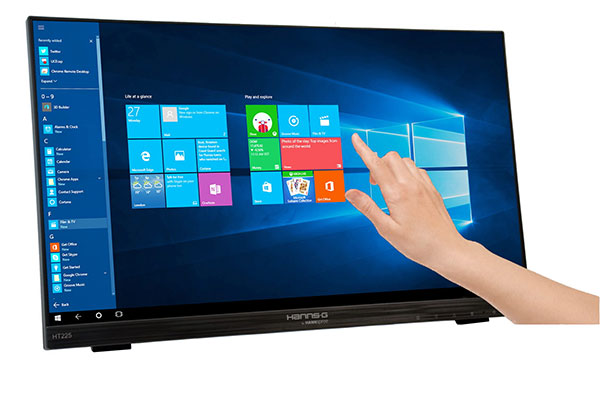

Touchscreen
18 de Enero de 2021
- Eventos Táctiles / Eventos de entrada
- Controladores de eventos
- Seguimiento de los movimientos de tocar y del puntero
Cualquier evento que involucre tocar la pantalla
Poner el dedo en la pantallaLevantar el dedo de la pantalla
Mover el dedo mientras se toca la pantalla

Estos eventos pueden involucrar uno o más dedos
Dependerá del dispositivo hasta cuántos dedos se puedan rastrear al mismo tiempo
De manera genérica, una vista(o una actividad) proporciona el método
Public boolean onTouchEvent(MotionEvent event)
Este método es llamado cuando se produce un evento táctil
El evento se recibe en el argumento
MotionEvent eventPara capturar dichos eventos hay que sobreescribir este método al crear nuestra vista personalizada
O, en una vista existente, registrar el listener
setOnTouchListener
onTouchEvent(MotionEvent)
Al producirse cualquier evento táctil, este se pasa a onTouchEvent, de manera que es necesario discriminar de qué evento se trata, analizando MotionEvent.
Nota: un evento puede tener varias acciones relacionadas!; on TouchEvent devuelve un booleano y este influye en si se procesarán más acciones en el evento.
True: el evento SÍ se capturó y SÍ se procesarán más acciones en el eventoFalse:el evento NO se capturó y NO se procesarán más acciones en el evento
Para obtener el tipo de evento hay que usar getActionMasked.
event.getActionMasked()O..MotionEvebtCompat.getActionMasked(event)Estos métodos devuelven una constante(int)
MotionEvent
Algunas constantes típicas en MotinEvent son
MotionEvent.ACTION_DOWN
Se apoyó un dedo en la pantalla(el primer dedo que se apoya)
MotionEvent.ACTION_MOVE
Se movió un dedo mientras estaba apoyado en la pantalla
MotionEvent.ACTION_UP
Se levantó un dedo de la pantalla(cuando el último dedo apoyado se levanta)
MotionEvent.ACTION_POINTER_DOWN
Por cada dedo adicional que se apoye
MotionEvent.ACTION_POINTER_UP
Cuando algún dedo se levante, menos el ultimo (aún quedan dedos apoyados)
Eventos Multi-touch
Para conocer cuántos dedos están apoyados
int s=event.getPointerCount();
Todos los dedos apoyados en la pantalla tendrán un índice.El evento siempre da el índice del dedo que acaba de hacer algo, generado el evento
int i=event.getActionIndex();
Este índice nos permite conocer más información sobre cada dedo trabajando en la pantalla
getX(i);getY(i):posición en la pantalla
Hay muchos métodos más, revise!
Hay también versiones sin índice, para cuando sabemos que hay un solo dedo
Eventos de entrada
En Android, existe más de una forma de interceptar los eventos desde una interacción del usuario con tu aplicación. Al considerar los eventos dentro de tu interfaz de usuario, el enfoque consiste en capturar los eventos desde el objeto de vista específico con el que el usuario interactúa. La clase de vista proporciona los medios para hacerlo.
Dentro de las diversas clases de objetos View que usarás para componer tu diseño, quizá observes varios métodos de callback públicos que pueden ser útiles para eventos de IU
El framework de Android llama a estos métodos cuando la acción respectiva ocurre en ese objeto. Por ejemplo, cuando se toca una vista (por ejemplo, un botón), se llama al método onTouchEvent() en ese objeto.
Extender la clase y reemplazar el método.
Extender todos los objetos de vista para manejar tal evento no sería práctico.
La clase de vista también contiene una colección de interfaces anidadas con callbacks que puedes definir más fácilmente.
Generalmente usarás los receptores de eventos para escuchar la interacción del usuario, es posible que en algún momento desees ampliar una clase de objeto View para crear un componente personalizado.
Gestores de eventos
Un receptor de eventos es una interfaz en la clase View que contiene un solo método de callback. Estos métodos serán llamados por el framework de Android cuando la vista con la cual se ha registrado el gestor sea iniciada por la interacción del usuario con el elemento en la IU.
onClick()
Desde View.OnClickListener. Este método se llama cuando el usuario toca el elemento (en el modo táctil), o selecciona el elemento con las teclas de navegación o la bola de seguimiento y presiona la tecla “Entrar” adecuada o la bola de seguimiento.
onLongClick()
Desde View.OnLongClickListener. Este método se llama cuando el usuario toca y mantiene presionado el elemento (en el modo táctil), o selecciona el elemento con las teclas de navegación o la bola de seguimiento y mantiene presionada la tecla “Entrar” adecuada o la bola de seguimiento (durante un segundo).
onFocusChange()
Desde View.OnFocusChangeListener. Este método se llama cuando el usuario navega hacia el elemento o sale de este utilizando las teclas de navegación o la bola de seguimiento.
onKey()
Desde View.OnKeyListener. Este método se llama cuando el usuario se centra en el elemento y presiona o libera una tecla física en el dispositivo.
onTouch()
Desde View.OnTouchListener. Este método se llama cuando el usuario realiza una acción calificada como un evento táctil, por ejemplo, presionar, liberar o cualquier gesto de movimiento en la pantalla (dentro de los límites del elemento).
onCreateContextMenu()
Desde View.OnCreateContextMenuListener. Este método es llamado cuando se crea un Context Menu (como resultado de un "clic largo" sostenido).
Estos métodos son los únicos habitantes de su respectiva interfaz. Para definir uno de estos métodos y manejar sus eventos, implementa la interfaz anidada en su actividad o defínela como una clase anónima. Luego, pasa una instancia de tu implementación al
método View.set...Listener() respectivo. (P. ej., llama a setOnClickListener() y pasa tu implementación deOnClickListener).
Quizá también te parezca más conveniente implementar OnClickListener como parte de tu actividad. Esto evitará la carga extra de la clase y la asignación de objetos. Por ejemplo:
Ten en cuenta que el callback onClick() del ejemplo anterior no tiene valor de retorno, pero algunos otros métodos de gestores de eventos deben devolver un valor booleano. El motivo depende del evento. A continuación, se explican los motivos de los pocos casos que lo hacen:
onLongClick():
este método muestra un valor booleano para indicar si has consumido el evento y si no debe continuar. Es decir, muestra un valor true para indicar que has usado el evento y que debe detenerse aquí; muestra false si no has usado el evento, o si el evento debe continuar para otros receptores de clic.
onKey():
este método muestra un valor booleano para indicar si has consumido el evento y si no debe continuar. Es decir, devuelve un valor true para indicar que has usado el evento y que debe detenerse aquí; devuelve false si no has usado el evento, o si el evento debe continuar para otros receptores de tecla.
onTouch():
este método muestra un valor booleano para indicar si tu receptor consume este evento. Lo importante es que este evento puede tener múltiples acciones una después de la otra. Por lo tanto, si devuelve false cuando se recibe el evento de acción de abajo, tú indicas que no has consumido el evento y también que no estás interesado en las acciones subsiguientes de este evento. Por ende, no se te llamará para otras acciones dentro del evento, como un gesto del dedo, o el evento de acción de arriba final.
Los eventos de teclas de hardware siempre se entregan a la vista actualmente en foco.
Se distribuyen comenzando desde la parte superior de la jerarquía de vistas y luego hacia abajo, hasta llegar al destino correspondiente.
Como
alternativa a capturar eventos de teclas a través de tu vista, también puedes recibir todos los eventos dentro de tu actividad con onKeyDown() y onKeyUp().
Android llamará en primer lugar a los controladores de eventos, y en segundo lugar, a los controladores predeterminados correspondientes de la definición de clase. Por lo tanto, al devolver true desde estos gestores de eventos, se detendrá la propagación del evento a otros gestores de eventos y también se bloqueará el callback al controlador de eventos predeterminado en la vista. Por lo tanto, asegúrate de que deseas finalizar el evento cuando devuelvas true.